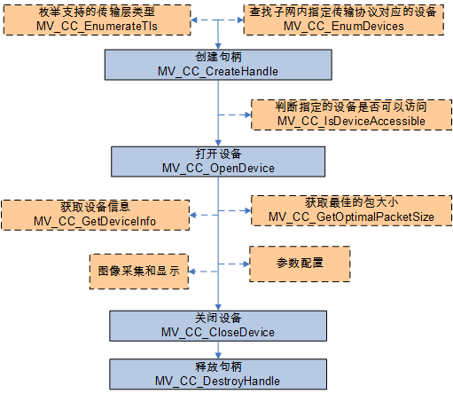
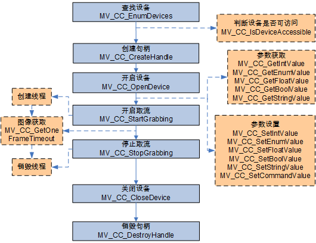
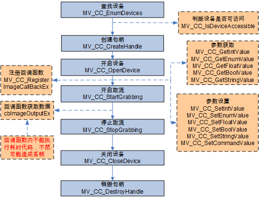

对设备进行操作，实现图像采集、参数配置等功能，需要先连接设备（打开设备），具体流程如下图所示。

| 获取设备信息 | MV_CC_GetDeviceInfo() |
| 获得最佳包大小(仅对网口相机有效) | MV_CC_GetOptimalPacketSize() |
SDK提供主动获取图像的接口，用户可以在开启取流后直接调用此接口获取图像，也可以使用异步方式（线程、定时器等）获取图像。示例代码详见 GrabImage.cpp 和 GrabImage_HighPerformance.cpp 。

| 获取/设置 Bool 类型节点值 | MV_CC_GetBoolValue() / MV_CC_SetBoolValue() |
| 获取/设置 Enum 类型节点值 | MV_CC_GetEnumValue() / MV_CC_SetEnumValue() |
| 获取/设置 Float 类型节点值 | MV_CC_GetFloatValue() / MV_CC_SetFloatValue() |
| 获取/设置 Int 类型节点值 | MV_CC_GetIntValueEx() / MV_CC_SetIntValueEx() |
| 获取/设置 String 类型节点值 | MV_CC_GetStringValue() / MV_CC_SetStringValue() |
| 设置 Command 类型节点值 | MV_CC_SetCommandValue() |
SDK提供注册回调函数的接口，用户可以将自己定义的回调函数注册在SDK内部，SDK获取到相机图像会主动回调到应用程序供用户处理，此方式可以简化用户程序逻辑。示例代码详见 Grab_ImageCallback.cpp 。

| 获取/设置 Bool 类型节点值 | MV_CC_GetBoolValue() / MV_CC_SetBoolValue() |
| 获取/设置 Enum 类型节点值 | MV_CC_GetEnumValue() / MV_CC_SetEnumValue() |
| 获取/设置 Float 类型节点值 | MV_CC_GetFloatValue() / MV_CC_SetFloatValue() |
| 获取/设置 Int 类型节点值 | MV_CC_GetIntValueEx() / MV_CC_SetIntValueEx() |
| 获取/设置 String 类型节点值 | MV_CC_GetStringValue() / MV_CC_SetStringValue() |
| 设置 Command 类型节点值 | MV_CC_SetCommandValue() |